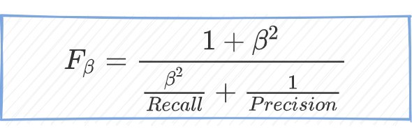
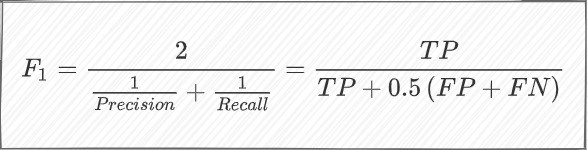
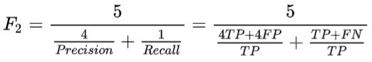
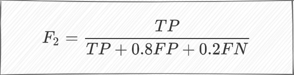
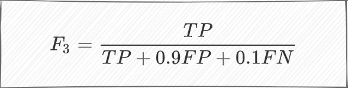
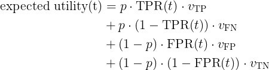
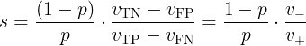

30 Classification
30.1 Misc
- Also see Diagnostics, Regression >> Residuals
- Two main types of quantities to validate (Harrell RMS Ch.5)
- Calibration (aka reliability): ability to make unbiased estimates of response (Y^ vs. Y)
- Discrimination: ability to separate responses
- Binary logistic model: e.g. AUROC
- (more optional) Centrality of errors: e.g. Brier Score
30.2 Terms
- Calibration - When the predicted probabilities from a model match the observed distribution of probabilities for each class. A well-calibrated model is one that minimizes residuals.
- Calibration-in-the-Large - mean calibration
- Harrell: “compares the average Y-hat with the average Y (does the model get the right result on average).”
- average predicted risk compared with the overall event rate
- Concerned with gross measurements of calibration, such as:
- Whether the model’s overall expected number of events exceeds the observed number
- Whether the proportion of expected over observed events departs significantly from “1”
- Harrell: “compares the average Y-hat with the average Y (does the model get the right result on average).”
- Calibration-in-the-Small - means that each of your model’s predicted probabilities, i.e. 0.01, 0.02, …, 0.99, occur exactly at that proportion in the observed data/real world
- i.e., for all the times when the predicted risk was 0.4, the outcome happened about 0.4 of the time.
- More important than calibration-in-the-large. Required for good decision making using risk models.
- Harrell: Assesses the absolute forecast accuracy at the individual levels of Y-hat.
- Smooth calibration curves visualizes this (See Calibration >> Calibration Plots >> Harrell)
- A curve close to the diagonal indicates that predicted risks correspond well to observed proportions
- “calibration-in-the-tiny” the next step: for males in which the prediction was 0.4 was the outcome present 0.4 of the time, then for females.
- Discrimination - The ability of the predictive model to predict the observed class. It’s not a particular performance measure. Typically AUROC, Somers’ Dxy
- Predictive discrimination is the ability to rank order subjects
- Example: The higher the ratio of patients who have high predicted risk probabilities / patients who actually have the disease, the better the discrimination by the model
- “High” is determined by a cutpoint or threshold
- External Validity - The extent to which your results can be generalized to other contexts. Assesses the applicability or generalizability of the findings to the real world. So, your study had significant findings in a controlled environment. But will you get the same results outside of the lab?
- Internal Validity - The degree of confidence that the causal relationship you are testing is not influenced by other factors or variables. Evaluates a study’s experimental design and methods. Studies that have a high degree of internal validity provide strong evidence of causality.
- Using CV or bootstrapping is sometimes referred to as performing internal validation
- Proper Scoring Rule (SO discussion + Harrell links) - A score assesses whether a probabilistic forecast is close to the true distribution. A score that is minimized in expectation if the predictive density is the true density.
- Loss functions that map predicted probabilities and corresponding observed outcomes to loss values, which are minimized in expectation by the true probabilities (p,1−p). The idea is that we take the average over the scoring rule evaluated on multiple (best: many) observed outcomes and the corresponding predicted class membership probabilities, as an estimate of the expectation of the scoring rule
- Also
- Strictly proper scoring rules -rules that are only minimized in expectation if the predictive density is the true density
- Improper scoring rules - (e.g. Accuracy)
Scores
- Types
Threshold (e.g. F-Scores, Accuracy, Precision, Recall)
- Determining thresholds depends on being able to correctly quantify the costs of type 1 and 2 errors
Ranking (ROC, PR) Costs not included An expected utility can’t be calculated
- Not intuitive to a non-technical audience
- Comparison of similar scoring models
- Notes from https://evidentlyai.com/blog/tutorial-2-model-evaluation-hr-attrition?utm_campaign=Data_Elixir&utm_source=Data_Elixir_332
- If there’s no clear winner in terms of scores, then you need to drill down.
- If models differ significantly on one or couple scores but not the others. Determine what that score optimizes for (e.g. precision, recall, etc.) and if that fits your use case.
- How does changing the classification threshold effect the scores?
- Makes sure whichever measure (e.g TP, FP, etc.) you’re maximizing for has plenty of observations, so you know you’re seeing a real effect.
- Examine how the models predict different groups (aka cohorts).
- Example: If it’s a employee churn model, how does the model perform on employees from different departments, skill level, roles, etc.
- One cohort might be more important to keep from churning than another.
- Out-of-Bag Error (OOB) - mean prediction error on each training sample (row) using only trees that didn’t use that sample in their bootstrap resample
- Useful when there isn’t enough data for a validation set.
- McNemar’s Test
- chi-squared test for symmetry
- See Post-Hoc Analysis, general >> Dichotomous Data for details and code
- Use this matrix format

matrix(c(9945, 25, 15, 15),
nrow = 2,
dimnames = list("model 1" = c("Correct", "Wrong"),
"model 2" = c("Correct", "Wrong")))If “wrong-correct” or “correct-wrong” have counts < 50, then use the Exact Tests to get accurate p-values
For more than 2 models, Cochran’s Q test can be used (generalized McNemar’s Test)
No-information rate - The proportion of the most common class
no_information_rate <- function(data) {
data %>%
count(outcome_var) %>%
mutate(proportion = n / sum(n)) %>%
top_n(1, proportion) %>%
pull(proportion)
}Used as a baseline metric for comparing models in multinomial classification
Custom Cost Functions
- Examples
- https://towardsdatascience.com/calculating-the-business-value-of-a-data-science-project-3b282de9be3c
- See notebook
- Visualizing Machine Learning Thresholds to Make Better Business Decisions

- Uses a Telecom subscriptions churn example and incorporates available resources (queue rate) that can review flagged events in order to choose a threshold
- i.e. if you can only review 50 cases, then you model need only flag 50 cases
- Adds uncertainty by using multiple train/test splits and creating quantiles for CIs
- Optimizes resources, costs, precision, and recall to produce a threshold
- Uses a Telecom subscriptions churn example and incorporates available resources (queue rate) that can review flagged events in order to choose a threshold
- Example of model ROI calculation: see Banking/Credit >> Fraud >> Misc
- Examples
Type I Error: False Positives - If FPs are more costly than FNs, then the threshold is raised to increase the accuracy of the model in predicting positive cases
Type II Error: False Negatives - If FNs are more costly than FPs, then the threshold is lowered to increase the accuracy of the model in predicting negative cases
Prevalence: proportion of a particular population found to be affected by a medical condition (typically a disease or a risk factor such as smoking or seatbelt use) at a specific time
- P / P + N
Prevalence Threshold: the prevalence level below which a test’s positive predictive value (PPV) declines most sharply relative to disease prevalence - and thus the rate of false positive results/false discovery rate increases most rapidly.
Misclassification cost = c1*FP + c2*FN, where c1 and c2 are costs per FP and per FN respectively; FP is total False Positives and FN is total False Negatives
- Simple method to assign a business value to a classification model
- See {yardstick::classification_cost}
Misclassification Rate = 1 - Accuracy
- where Accuracy = (TP + TN) / (TP + TN + FP + FN)
- Uses Accuracy so terrible for unbalanced classes.
Recall/Sensitivity: What fraction of all true positives did the model get correct?
- Recall = TP / (TP + FN)
- Focuses on Type-II error (FN)
- Probability of detecting a condition when it’s truly present
- i.e. normally want high sensitivity and low specificity
- As the number of FNs towards 0, the value of Recall will tend to TP/TP = 1
- Interpretation: 1 is perfect, < 0.5 is low
- Maximize when FNs are more costly
- Examples
- A customer gets their card stolen and incurs fraudulent charges, but the model doesn’t detect it.
- Examples
Precision or True Positive Rate (TPR) or Positive Predictive Value (PPV): What fraction of observations that the model identified as positive were correct? (i.e. the fraction of all the actual positives (TP+FN) that you model labels as positives.)
- Precision = TP / (TP + FP)
- Focuses on Type-I error (FP)
- Interpretation: 1 is perfect, < 0.5 is low
- Maximize when FPs are more costly
- Examples
- An event is mistakenly detected that results in a high value customer getting their account suspended.
- You want to reduce the number of unsuccessful marketing calls that the model predicts will be conversions.
- Examples
Specificity or True Negative Rate (TNR): What is the fraction of all the true negatives did the model get correct?
- Specificity = TN / (TN + FP)
- Probability of not detecting a condition when it’s truly present
- i.e. normally want high sensitivity and low specificity
False Positive Rate (FPR): FPR = 1 - TNR = FP / (FP + TN)
False Negative Rate (FNR): FNR = 1 - TPR = FN / (FN + TP)
Negative Predictive Value (NPV): NPV = TN / (TN + FN)
- PPV and NPV are useful after the result of the test in know (unlike Sensitivity and Specificity which are useful before the results are known)
- Both PPV and NPV are useful GoF metrics since they describe performance on future data.
- {yardstick}
Positive Likelihood Ratio (LR+): TPR / FPR
Negative Likelihood Ratio (LR-): FNR / TNR
False Discovery Rate (FDR): FP / (TP + FP) = 1 − PPV
- Expected ratio of the number of false positive classifications (false discoveries) to the total number of positive classifications (rejections of the null)
- FDR-controlling procedures provide less stringent control of Type I errors compared to family-wise error rate (FWER) controlling procedures (such as the Bonferroni correction), which control the probability of at least one Type I error.
- Thus, FDR-controlling procedures have greater power, at the cost of increased numbers of Type I errors.
Balanced Accuracy
- BA = c*(TP/P) + (c-1)*(TN/N)
- c is a cost weight between 0 and 1
- P and N are observed Positives and Negatives
- Can also be used when the negative class is more important to get right
- e.g. Cost Reductions: Reduce unnecessary treatments of healthy patients that got an FP on their disease test
- {yardstick}
- BA = c*(TP/P) + (c-1)*(TN/N)
Brier Score
- How far your predictions lie from the true values
- a mean square error in the probability space
- Smaller Brier scores are better
- Random guess model (i.e. all predicted probabilities = 0.50) has a Brier score of 0.25
- When the outcome incidence is lower (i.e. event rate, proportion of 1s), the maximum score for a random guess model is lower, eg, for 10%: 0.1 x (1 - 0.1)2 + (1 - 0.1) x 0.12 = 0.090.
- formula: Y x (1- p)2 + (1-Y) x p2
- When the outcome incidence is lower (i.e. event rate, proportion of 1s), the maximum score for a random guess model is lower, eg, for 10%: 0.1 x (1 - 0.1)2 + (1 - 0.1) x 0.12 = 0.090.
- Issue: inadequate for very rare (or very frequent) events, because it does not sufficiently discriminate between small changes in forecast that are significant for rare events.
- n > 1000 required for higher-skill forecasts of relatively rare events, whereas only quite modest sample sizes are needed for low-skill forecasts of common events (wiki)
- Bootstrapping code (article)
- Binary outcomes
- f is the predicted probability
- o is the observed outcome
- Range is from 0 to 1
- mean of brier loss
- Multi-category outcomes
- R is the number of categories
- **Range is from 0 to 2
- Brier Skill Score (BSS)
- Percentage improvement in the BS compared to the reference model
- Still a strictly proper scoring rule
- Values between 0 and 1
- **Higher is better
- BS is the brier score
- BSref is a reference/baseline brier score that your trying to beat
- Default value (no-skill/naive model value)
- **for binary outcomes
- o is the observed outcome
- ō is the average observed outcome (i.e. overall proportion of 1s)
- Default value (no-skill/naive model value)
- Scaled Brier Score Code (article)
- How far your predictions lie from the true values
scaled_brier <- function(x, p, ...){
format(round(1 - (x / (mean(p) * (1 - mean(p)))), digits = 2), nsmall = 2)
}Brier scaled = 1 – (Brier/Brier_max)
- where Brier_max = mean(p) x (1 - mean(p))
range between 0% and 100%
Cohen’s Kappa: a similar measure to accuracy, but is normalized by the accuracy that would be expected by chance alone and is very useful when one or more classes have large frequency distributions.
- extends naturally to multiclass scenarios
yardstick::kap, docs- a measure of agreement between categorical variables X and Y
- calculated from the observed and expected frequencies on the diagonal of a square contingency table
- Range: 0 < κ < 1, although negative values do occur on occasion.
- Suited for nominal (non-ordinal) categories.
- Weighted kappa can be calculated for tables with ordinal categories.
- See Penn Stats Stats 509 for further details, equation
F scores - each score weights FP and FN differently. A trade-off between Precision and Recall
- Range: 0 to 1
- 1 - Perfect precision and recall
- 0 - Either precision or recall are zero.
- i.e. a low F-score doesn’t tell you whether it’s precision or recall that is the problem
- Maximizing FPR along with F1 will help curb Type-I errors and you’ll get an idea about the villain behind your low F1-score
- Rule of Thumb
- > 0.9 Very good
- 0.8 - 0.9 Good
- 0.5 - 0.8 OK
- < 0.5 Not good
- Fine for imbalanced classes as long as the positive class (TP and FP) is what’s important and not the negative class (e.g. FN and TN) (article)
- F_beta
- A generalized F score
- Choose your own ratio
- the more you care about recall over precision the higher beta you should choose
- e.g. If you want precision to be twice as important than recall, you’d set β to 0.5
- Use when you care more about the positive class
- F1
- harmonic mean of precision and recall
- recall and precision are of the same importance
- F2 and F3
- F2: 80/20
- β = 2. Therefore you care about Recall twice as much as Precision
- F3: 90/10
- β = 3. Therefore you care about Recall 3 times as much as Precision
- F2: 80/20
- Range: 0 to 1
H measure
- {hmeasure}
- see bkmks for vignette
- Instead of using misclassification cost (c, see above) as a constant it defines it as a distribution
- {hmeasure}
J index (a.k.a. Youden’s J statistic) - sensitivity + specificity - 1.
Values near one are best. lower for models with pathological distributions for the class probabilities (i.e. uncalibrated)
{yardstick}
Lift Score: compares model predictions to randomly generated predictions
.png)
from mlxtend.evaluate import lift_score
scorer = {
'lift_score': make_scorer(lift_score)
}From raschka library
- Also has examples on how to implement
make_scoreris from {{sklearn}}
{yardstick::lift_curve}
Matthew’s Correlation Coefficient (MCC)[](./_resources/Diagnostics,_Classification.resources/0-JAaQ3euxEZASHu0q.gif]]
- It’s a correlation between predicted classes and ground truth.
- Aka Phi Coefficient (i.e. pearson correlation for 2x2 tables, i.e. binary variables)
- {yardstick}
- Range: -1 to 1
- 0 is equivalent to a random prediction
- -1 predictions are perfectly negatively correlated with the truth
- 1 predictions are perfectly postiviely correlated with the truth (model is perfect)
- Uses all confusion matrix values
- Robust to class imbalance
- It’s a correlation between predicted classes and ground truth.
Mean Log Loss (aka Cross-Entropy)[](./_resources/Diagnostics,_Classification.resources/0-aFJ20tvcPK3Gbrc0.gif]]
- the difference between ground truth and predicted score for every observation and average those errors over all observations
- Lower is better
- A perfect model has a mean log loss of 0.
- Also see Loss Functions for issues with this metric
PR-AUC - The area under the Precision-Recall curve
- Values near one indicate very good results while values near 0.5 would imply that the model is very poor
- Better for imbalanced classes
- PR AUC focuses mainly on the positive class (PPV and TPR) it cares less about the frequency of the negative class
- Use when you care more about positive than negative class Pseudo R2
library(DescTools)
PseudoR2(model, which = c("CoxSnell", "Nagelkerke", "Tjur"))
## CoxSnell Nagelkerke Tjur
## 0.6583888 0.9198193 0.8795290- How much of the likelihood of promotion does my model explain?
- our model explains more than two thirds of the variation in the promotion outcome.
- ROC-AUC (aka AUROC, concordance statistic, or c-statistic) - The area under the ROC is an overall assessment of performance across all cutoffs.
- Values near one indicate very good results while values near 0.5 would imply that the model is very poor.
- Use it when you care equally about positive and negative classes
- Do NOT use it if you have imbalanced classes
- Somers’ Dxy
- Dxy = 2 * (c - 0.5) where c is the concordance probability or AUROC
- A pure discrimination measure which is a rank correlation between Y and Yhat
30.3 Class Imbalance Metrics
- Misc
- Class imbalance sampling methods tend to greatly improve metrics based on the hard class predictions (i.e., the categorical outcome variables and not binned numeric variables) because the default cutoff tends to be a better balance of sensitivity and specificity.
- e.g J index vs AUC
- ROC curves and PR curves have inflated performance under strong class imbalance
- Class imbalance sampling methods tend to greatly improve metrics based on the hard class predictions (i.e., the categorical outcome variables and not binned numeric variables) because the default cutoff tends to be a better balance of sensitivity and specificity.
- Scores: F-Scores, MCC, PR-AUC, Cohen’s Kappa, precision at fixed recall, recall at fixed precision
- Precision-Recall
- In cases of balanced classes, Sensitivity and Specificity are often used
- For less-than-perfect models (FP = FN = 0), if you increase Precision, you reduce Recall and vice versa.
- Sensitive to class-imbalance
- You can’t compare curves that have been tested on two different test sets if the class proportions differ
- A test-set with a 50:50 proportion will have higher scores in general as compared to a test-set with a 10:90 proportion for the primary class.
30.4 Multinomial
- Misc
- In Scores, also see No-information Rate for a baseline
sklearn::classification_reportcalculates the maps and waps for precision, recall, and f1-score- “support” in this report refers to label and total sample sizes.
- See Model building, sklearn >> Misc >> Score Model for code
- Mean Log Loss in {yardstick}
- Confusion Matrix

- Class labels are numbers 0-9
- The decimal places are confusing but these are counts of the predicted label matching each observed label
- Precision for Label 9 = TP / (TP + FP) = 947/ (947 + 1 + 0 + 0 + 0 + 0 + 38 + 0 + 40 + 2) = 0.92
- Columns are used for precision calculation
- Recall for label 9 = TP / (TP + FN) = 947 / (947 + 0 + 0 + 0 + 0 + 0 +14 + 0 + 36 + 3) = 0.947
- Rows are used for recall calculation
- Macro Average Precision - simple arithmetic average of the precision of all the labels
- map = (0.80 + 0.95 + 0.77 + 0.88 + 0.75 + 0.95 + 0.68 + 0.90 + 0.93 + 0.92) / 10 = 0.853
- Weighted Average Precision - the precision of each label is multiplied by their sample size and the weighted sum is divided by the total number of samples
- wap = (760*0.80 + 900*0.95 +535*0.77 + 843*0.88 + 801*0.75 + 779*0.95 + 640*0.68 + 791*0.90 + 921*0.93 + 576*0.92) / 7546 = 0.86
- where 760 = sample size for label 0, 900 = sample size for label 1, etc., and 7546 is the total sample size
- wap = (760*0.80 + 900*0.95 +535*0.77 + 843*0.88 + 801*0.75 + 779*0.95 + 640*0.68 + 791*0.90 + 921*0.93 + 576*0.92) / 7546 = 0.86
- Same techniques can be used for F-Scores and others.
- Example: The F-Score would be calculated for each label. Then, the map and wap can be calculated from those individual label scores.
30.5 Curves
Misc
- {rtichoke} - interactive ROC/PR curves; all kinds of additional information provided in the pop-up
- {yardstick}
- {ROCR}
Receiver Operating Curve (ROC)
- If a model is poorly calibrated, the ROC curve value might not show diminished performance. However, the J index would be lower for models with pathological distributions for the class probabilities.
- A ROC curve plots TPR as a function of FPR at different decision thresholds. We want to minimize our FPR while maximizing our TPR.
- A good model will bend towards the upper-left corner of plot.
- A bad model (i.e., random) will hug the diagonal.
- A ludicrously bad model (i.e., worse than random) will bend towards the lower-right corner of the plot.
- packages
- {ROCR}
- {runway}
Precision-Recall (PR)

- When the observations with true positive labels are rare, then PR curves are preferred (See Class Imbalance)
Threshold Analysis
- {runway}

- {runway}
Decision Curves
- See also Decison Intelligence
- A simple, step-by-step guide to interpreting decision curve analysis
- net benefit = sensitivity × prevalence – (1 – specificity) × (1 – prevalence) × w
- where w is the odds at the threshold probability.
- For a prediction model that gives predicted probability of disease p̂, sensitivity and specificity at a given threshold probability p_t is calculated by defining test positive as p̂ ≥ p_t.
- net benefit = sensitivity × prevalence – (1 – specificity) × (1 – prevalence) × w
Determine the Probability Threshold Using Expected Utility (article)
- Where
- t is the probability threshold for classifying a 1/0 outcome
- ν is the utility assigned to a TP, FN, FP, TN prediction
- Can be positive or negative values
- Could be dollar amounts or dollar amounts normalized into weights
- p is observed proportion of events (i.e. 1s) in the sample.
- See also Decison Intelligence
- Algebraically equivalent expected utility equation

- c is the expected utility
- Linear equation in the form, c = yb + xa where slope, s = -a/b
- Slope
- ν- and ν+ are just simplified notation
- s > 1: negative classes outweigh positive ones, or correctly classifying a negative class outweighs correctly classifying a positive class in terms of utility or both
- s < 1: positive classes outweigh negative ones, or correctly classifying a positive class outweighs correctly classifying a negative class in terms of utility or both
- Optimizing utility for different values of t

- Determine the blue baseline in the bottom charts for different ranges of s
- Given a range of s and setting t to 0 or 1, we can infer FPR and TPR. Then, we use these values to calculate the baseline expected utility
- For s > 1: Set t = 1, meaning we always reject, resulting in FPR = 0 and TPR = 0
- For s < 1: Set t = 0, meaning we always accept, resulting in FPR = 1 and TPR = 1
- Given a range of s and setting t to 0 or 1, we can infer FPR and TPR. Then, we use these values to calculate the baseline expected utility
- Determine the blue baseline in the bottom charts for different ranges of s
- Utility vs Threshold is all you really need. I think the top charts are just there to show how this type of baseline is more difficult (and realistic) bar to pass when compared to the typical 45 degree line used in ROC charts.
- Where
30.6 Calibration
- Misc
- Also see
- Classification >> Calibration
- Terms section in this note
- A tutorial on calibration measurements and calibration models for clinical prediction models (paper)
rms::val.prob(predicted, observed)(Harrell’s function) outputs most of the calibration metrics mentioned
- packages
- Also see

preds <- tibble(
truth = data$class,
truth_int = as.integer(data$class) - 1,
estimate = predict_prob(unbalanced_model, data)
)
cal_plot_breaks(preds, truth = truth_int, estimate = estimate){{binclass-tools}}
Stratification and calibration metrics (e.g. low risk, medium risk, and high risk)
- Useful if you want to choose the model that performs best on a specific risk group.
- You can add a categorical variable to the calibration set and group observations based on the predicted probabilities
- After grouping the predicted probabilites, calculate calibration metrics for each group
- See ICI paper for more details
Basic Workflow
- Compute Tests using 2 vectors
- classifier’s predicted probabilities
- numeric (0/1) observed outcome
- Compute Mean, Weak, and Moderate levels of Calibration
- Create Calibration Plots
- Interpret
- If model isn’t well-calibrated, then
- which region of the probability range is being over/under-predicted?
- are these regions important to the use case?
- Is the model useful with this level of calibration
- calibrate predictions (see Classification >> Calibration >> Platt Scaling/Isotonic Regression)
- which region of the probability range is being over/under-predicted?
- If model wasn’t well-calibrated, but now the predictions have been calibrated,
- is model/predictions still not sufficiently calibrated?
- are there any regions still being over/under-predicted?
- are these regions important to the use case?
- Is the model useful with this level of calibration
- If model isn’t well-calibrated, then
- Compute Tests using 2 vectors
Tests for Miscalibration
- Misc
- The ROC curve value might not show diminished performance.
- However, the J index would be lower for models with pathological distributions for the class probabilities.
- The Hosmer-Lemeshow (H-L) test is popular but has major shortcomings. Not a good test to trust by itself
- based on artificially grouping patients into risk strata, p-value that is uninformative with respect to the type and extent of miscalibration, and low statistical power
- See Spiegelhalter z statistic >> Manually >> paper for more details
- Also see RMS Ch 10.5 (end of section, listen to audio)
- The ROC curve value might not show diminished performance.
- Spiegelhalter z statistic
.png)
- where E is the predicted probability, O is the observed outcome (0/1), and N is the number of observations
- Stata: this tests “whether an individual Brier score is extreme”
- p-value < 0.05 suggests an improperly calibrated model (lower z-stats = more calibrated)
- Null hypothesis is that the estimated probabilities are equal to the true class probabilities
rms::val.prob(predicted, observed)- Gives “the Spiegelhalter Z-test for calibration accuracy, and its two-tailed P-value”
- z-score is under “S:z” and it’s p-value is under “S:p”
- Manually (paper, github)
- Misc
Spiegelhalter_z = function(y, prob){
alpha = 0.05
z_score = sum((y-prob)*(1-2*prob))/sqrt(sum(((1-2*prob)^2)*prob*(1-prob)))
print(z_score)
if (abs(z_score) > qnorm(1-alpha/2)){
print('reject null. NOT calibrated')
} else{
print('fail to reject. calibrated')
}
cat('z score: ', z_score, '\n')
cat('p value: ', 1-pnorm(abs(z_score)), '\n')
return(z_score)
}y = observed_outcome (numeric, binary, prob = predicted probabilities from your classifier
Uses upper-tail p-value but I think a two-sided p-value is probably more correct (See below)
Misc
- Harrell uses a two-sided p-value but a couple other papers I read just use the upper-tail. I asked Harrell and he tagged Spiegelhalter in a tweet to see which is correct (tweet). Haven’t heard back yet.
- SAS squares it to get a ChiSq distribution, which is equivalent to a 2-tail Z-test, and tests it that way:
pchisq(z_stat^2), lower.tail = F) - Stata uses the upper tail probability
Integrated Calibration Index (ICI, Eavg) (paper)
- Misc
- Interpreted as weighted mean absolute difference between observed and predicted probabilities, in which observations are weighted by the empirical density function (i.e. empirical distribution) of the predicted probabilities.
- Motivated by Harrell’s Emax index (see below), which is the maximum absolute difference between a smooth calibration curve and the diagonal line of perfect calibration
- Lower is better for each metric (ICI, E50, E90, and Emax)
- These metrics are used for model comparison. There aren’t guidelines for metric values that delineate well-calibrated models for poorly calibrated ones.
- See below for ICI bootstrap CIs
- In general, the larger the sample size the lower the values for each metric
- i.e. don’t compare models that were fit with different sized datasets.
- Emax is the least stable out of the four metrics
- Process
- Fit a LOESS model for observed_outcome ~ predicted probabilities
- Take the average of the abs difference between the loess predicted probabilities and your model’s predicted probabilities
- Loess predicted probabilities are predicted using your model’s predicted probabilities as new data.
- Manually (paper, github)
- Misc
ici = function(Y, P){
loess.calibrate <- loess(Y ~ P)
# Estimate loess‐based smoothed calibration curve
P.calibrate <- predict(loess.calibrate, newdata = P)
# This is the point on the loess calibration curve corresponding to a given predicted probability.
ICI <- mean(abs(P.calibrate - P))
return(ICI)
# plot
plot(P, P.calibrate)
lines(P.calibrate, x=P)
}- E50, E90, and Harrell’s Emax
# Let Y denote a vector of observed binary outcomes.
# Let P denote a vector of predicted probabilities.
loess.calibrate <‐ loess(Y ∼ P)
P.calibrate <‐ predict(loess.calibrate, newdata = P)
E50 <‐ median(abs(P.calibrate – P))
E90 <‐ quantile(abs(P.calibrate – P), probs = 0.9)
Emax <‐ max(abs(P.calibrate – P))- Notes from ICI paper above
- Lower is better for each metric
- Emax - maximal absolute difference between observed and predicted probabilities of the outcome
- i.e. the maximal absolute vertical distance between the calibration curve and the diagonal line denoting perfect calibration
- Issue: the greatest distance between observed and predicted probabilities may occur at a point at which the distribution of predicted probabilities is sparse.
- When comparing two competing prediction methods, it is possible that one method, despite having a greater value of Emax, actually displays greater calibration in the region of predicted probabilities in which most predicted probabilities lie.
- E50 denotes the median absolute difference between observed and predicted probabilities
- i.e. same as ICI (aka Eavg)except uses the median instead of the mean
- Less influenced by a small minority of subjects/observations for whom there is a large discrepancy between observed and predicted probabilities (i.e. outliers)
- E90 denotes the 90th percentile of the absolute difference between observed and predicted probabilities.
- Summarizes the limit to the absolute discrepancy for the large majority of subjects in the sample
- Bootstrap CIs for ICI, E50, E90, Emax
- {CalibrationCurves}
- Harrell’s val.prob function but only requires the numeric observed outcome and predicted probabilities, so you don’t need to enter Harrellverse
- Has a ton of extra features, but the documentation is kind of poor.
val.prob.ci.2(preds, observed_y)
- Example: Using
rms::val.probwith aglmmodel (article)- also code for viz of the bootstrap distributions of each metric
- Procedure
- Draw bootstrap sample from the training dataset
- Draw bootstrap sample from the calibration dataset
- Fit classifier to the training bootstrap sample
- Get predictions from classifier on calibration sample
- Calculate calibration metrics using calibration set’s observed outcomes and classifier’s predictions on the calibration set.
- Paper used 2000 bootstrap replicates (B = 2000).
- Percentile‐based bootstrap confidence intervals were then constructed using these 2000 bootstrap replicates.
- e.g. the endpoints of the estimated 95% confidence interval were the empirical 2.5th and 97.5th percentiles of the distribution of the given calibration metric across the 2000 bootstrap replicates.
- To calculate CIs for the difference in calibration metrics between models, I think each type of classifier would participate for each replicate and the differences would be calculated in step 5. (glossed over in the paper)
- If the difference CI contains 0, then it can be said that the calibration for both models is comparable.
- {CalibrationCurves}
- Evaluation of Calibration Levels
- Mean - See Calibration-in-the-Large, (Y vs Yhat)
- average predicted risk compared with the overall event rate
- Weak - means that, on average, the model does not over or underestimate risk and does not give overly extreme (too close to 0 and 1) or modest (too close to disease prevalence or incidence) risk estimates.
- intercept - a target value of 0 (Calibration-in-the-Large)
- A logistic regression model, Y ~ offset(Yhat), is fit to get the calibration intercept
- < 0 suggests overestimation
- > 0 suggests underestimation
- slope - target value of 1
- A logistic regression model, Y ~ Yhat, is fit to get the calibration slope (paper, see supplemental material)
- < 1 suggests that estimated risks are too extreme
- i.e., too high for patients who are at high risk and too low for patients who are at low risk
- > 1 suggests the opposite
- i.e., that risk estimates are too moderate
- A calibration intercept close to 0 and a calibration slope close to 1 do not guarantee that the flexible calibration curve (Calibration-in-the-Small) is close to the diagonal
- Acceptable to stop evaluation at weak calibration for small datasets
- intercept - a target value of 0 (Calibration-in-the-Large)
- Moderate - implies that estimated risks correspond to observed proportions
- e.g., among patients with an estimated risk of 10%, 10 in 100 have or develop the event
- See Calibration-in-the-Small
- Strong - the predicted risk corresponds to the observed proportion for every possible combination of predictor values; this implies that calibration is perfect and is a utopic goal
- Mean - See Calibration-in-the-Large, (Y vs Yhat)
- Calibration Plot (Reliability Diagrams)
- Misc
- See Misc >> packages for calibration curve functions
- Calibration curves for nested cv (post)
- A loess curve is estimated for each split in the outer loop. Those curves are then “averaged” by fitting another loess curve onto those curves.
- Harrell re calibration curves showing miscalibration at the tails: “you can ignore extreme tails where there are almost no data, with the exception that you’d need to mention that if future predictions ever appear in such tails such predictions are of unknown accuracy.
- Harrell uses a loess curve,
loess(y ~ yhat, iter = 0)- Because binning subjects into strata based on predicted risk may result in a loss of information
- With
rms::calibrate, he also bootstraps the process to create a bias-corrected curve- See RMS Ch 10.11 pgs 269-270 for details
calibratecode on github- Be aware there is more that one “calibrate” function in the repo
- Evaluating a logistic regression based prediction tool in R
- Code for a simple loess smoothed calibration plot and a binned one, both in ggplot2
- The binned one uses an “lm” smoother. The intercept (and slope?) should measure Calibration-in-the-Large (see Terms)
- The loess curve vs the 45 degress ab-line should be a visualization of Calibration-in-the-Small (see Terms)
- {CalibrationCurves}
- Harrell’s val.prob function but only requires the numeric observed outcome and predicted probabilities, so you don’t need to enter Harrellverse
- Has a ton of extra features, but the documentation is kind of poor.
val.prob.ci.2(preds, observed_y)
- Binning Method
- x-axis
- the predicted probabilities are divided up into a fixed number of bins along the x-axis.
- too few bins and we won’t have enough points on the curve, too many bins and we will have too few observations in each bin leading to more noise. It is common to select 10 bins.
- The number of events (class=1) are then counted for each bin (e.g. the relative observed frequency).
- Finally, the counts are normalized.
- The proportion of 1s for each bin is calculated
- the predicted probabilities are divided up into a fixed number of bins along the x-axis.
- y-axis
- Observed proportion of positive events (1) for each x-axis bin
- Freedman-Diaconis rule - a statistical rule designed for finding the number of bins that makes the histogram as close as possible to the theoretical probability distribution
- Code
- x-axis
- Misc
GetCalibrationCurve <- function(y, y_pred, bins = 10) {
data.frame(y = y, y_pred = y_pred) %>%
arrange(y_pred) %>%
mutate(pos = row_number() / n(),
bin = ceiling(pos * bins)) %>%
group_by(bin) %>%
summarize(estimated_prob = mean(y_pred),
actual_prob = mean(y))
}
df <- GetCalibrationCurve(y, y_pred, bins = 10)
ggplot(df, aes(estimated_prob, actual_prob)) +
geom_point() +
geom_line() +
geom_abline(slope = 1, intercept = 0, linetype = 2) +
coord_cartesian(xlim = c(0, 1), ylim = c(0, 1)) +
theme_bw() +
labs(title = "Calibration curve", x = "Estimated probability",
y = "Actual probability")Also see Evaluating a logistic regression based prediction tool in R
Interpretation
- The better calibrated or more reliable a forecast, the closer the points will appear along the main diagonal from the bottom left to the top right of the plot.
- Below the diagonal: The model has over-forecast; the probabilities are too large.
- Above the diagonal: The model has under-forecast; the probabilities are too small.
- Example 1

- Systematic overestimation (red): Compared to the true distribution, the distribution of predicted probabilities is pushed towards the right. This is common when you train a model on an unbalanced dataset with very few positives.
- Systematic underestimation (blue): Compared to the true distribution, the distribution of predicted probabilities is pushed leftward.
- Center of the distribution is too heavy (green): This happens when “algorithms such as support vector machines and boosted trees tend to push predicted probabilities away from 0 and 1” (quote from «Predicting good probabilities with supervised learning»).
- Tails of the distribution are too heavy (black): For instance, “Other methods such as naive bayes have the opposite bias and tend to push predictions closer to 0 and 1” (quote from «Predicting good probabilities with supervised learning»).
- Example 2 (paper)

- Based on an outcome with a 25% event rate and a model with an area under the ROC curve (AUC or c-statistic) of 0.71.
- a: General over- or underestimation of predicted risks.
- b: Predicted risks that are too extreme or not extreme enough